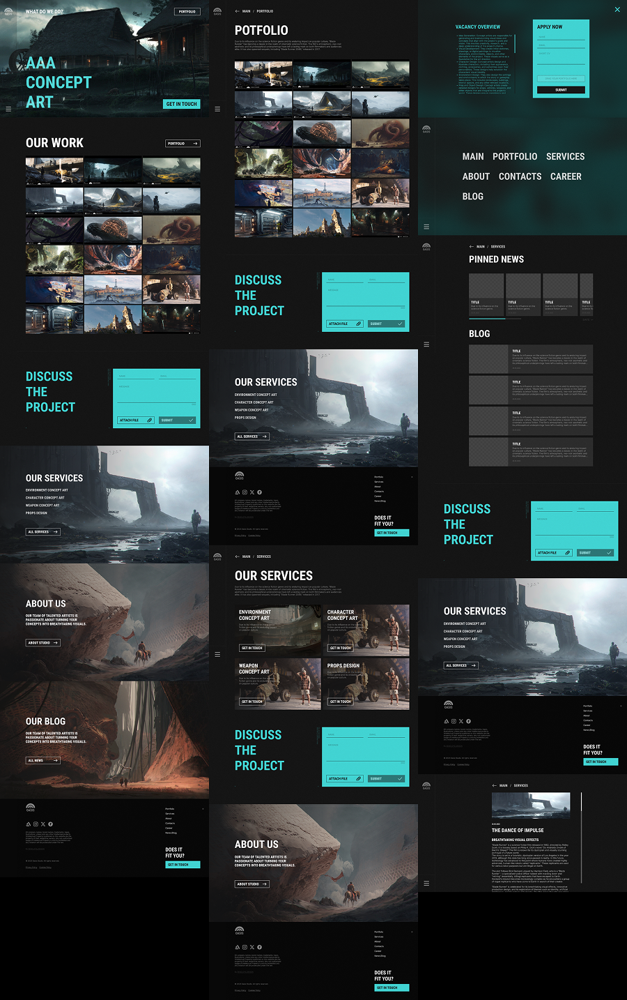
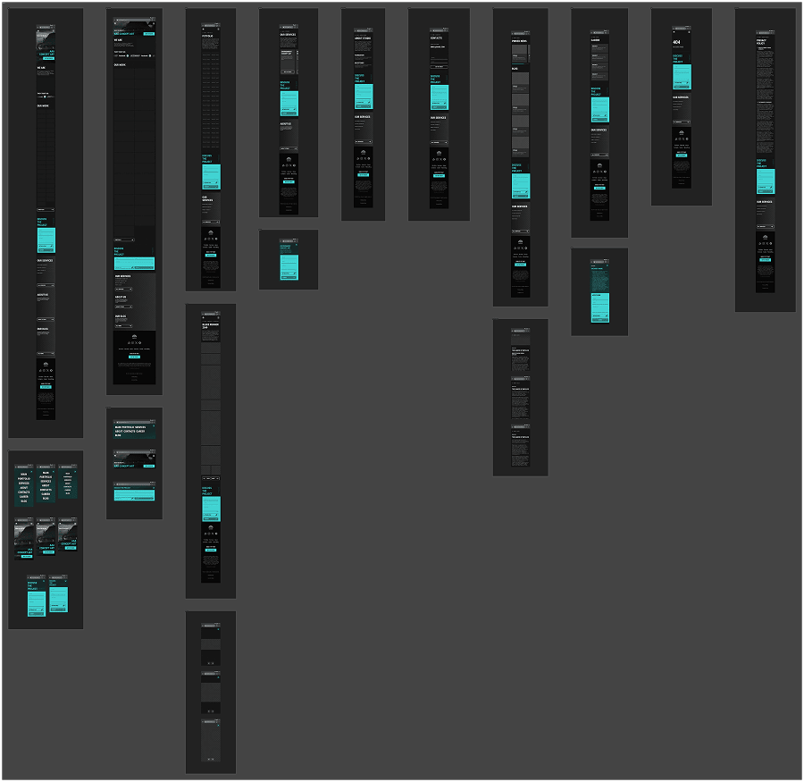
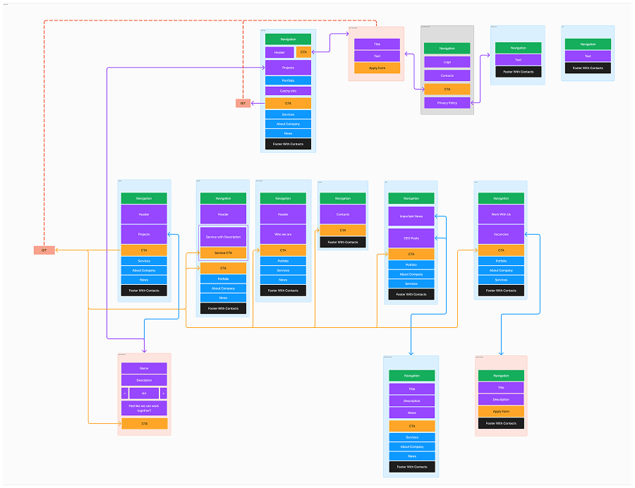

oasis studio
designed site portfolio for an art studio “oasis”

01
visual identity
designed in close collaboration with the CEO, and together we shaped a shared vision for the UI and UX. The result was a clean design with clear visual and interaction patterns — and one that's easy to scale.

02
full compatibility with mobile devices
The site is built for desktop first, but it's fully adapted for use on mobile devices.

03
site architecture
